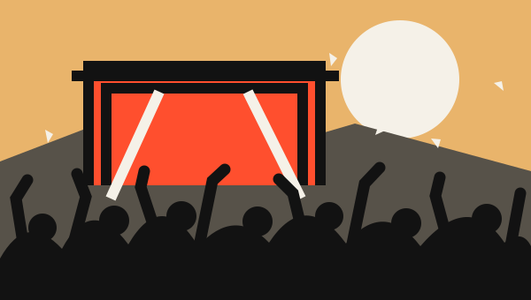

SATURDAY
THE SOFT HOURS
MARLO VANE
PAPER KITES CLUB · JUNEBUG STATIC · ODESSA GREY
HOLLOW PINES · THE TIN LANTERNS · KIKO MARS
BRAMBLE AND ASH · SUN COAST RADIO
11 AND 12 JULY 2026
KIRKSTALL RIVERSIDE, LEEDS
TWO DAYS, THREE STAGES, ONE RIVER

THE SOFT HOURS
MARLO VANE
PAPER KITES CLUB · JUNEBUG STATIC · ODESSA GREY
HOLLOW PINES · THE TIN LANTERNS · KIKO MARS
BRAMBLE AND ASH · SUN COAST RADIO
NIGHT SWIMMERS
ADA OKONKWO
VELVET STATIC · THE LOWLAND CHOIR · RAE STERLING
COPPER MOTH · LITTLE GALE · FEN WOLVES
THE MARIGOLDS · DUSK PATROL
£59
Saturday or Sunday
All three stages
Re-entry until 6 pm
£99
Both days
All three stages
Free river shuttle from the station
£25
With a paying adult
Both days
Ear defenders at the gate
No booking fees. Tickets are named and can be transferred for free until 1 July.
Festival concept for the advertised 2026 dates. Ticket selections are a local demonstration; sales are not connected.
3 stages
40 food stalls,
half of them local
A river you can paddle in
at the shallow end
Music stops at 22:30,
the trains do not
Kirkstall Forge station is a seven minute walk. Extra trains run until midnight both nights.
There is guarded bike parking for 1,200 bikes at the east gate, free all weekend.
There is no public parking on site. Use the park and ride at Bodington, £8 return.
Low camping chairs are fine. Gazebos and large umbrellas are not.
Yes. There is a raised viewing platform at every stage, accessible toilets and a quiet tent. Book a free carer ticket with your own.
Yes, for your own group. No glass and no alcohol.
The site is card only. There are two cash to card points at the gates.
It goes ahead. Bring a coat, the river is wet anyway.
Yes, until 6 pm. After that it is one way out.